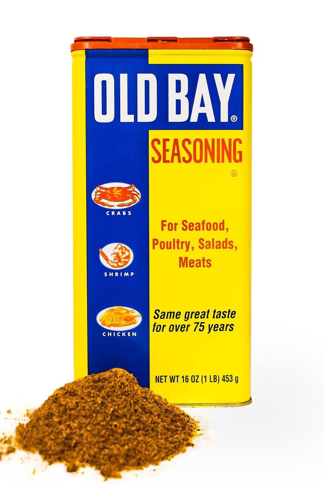

a sauceOld Bay Seasoning
also: Old Bay · the yellow can
In Baltimore it goes on the wings without being ordered, the way blue cheese arrives in Buffalo.

A blend of eighteen herbs and spices built on celery salt — salt and celery seed — with red pepper, black pepper and paprika. Bay leaves, mustard, cardamom, cloves and ginger are among the others listed for the original product held at the Baltimore Museum of Industry. Made for crab and shrimp; used on wings, fries, popcorn, eggs, corn and a great deal else across Maryland, Virginia and the rest of the Mid-Atlantic.
The story Cited · wp-old-bay-seasoning
Gustav Brunn built a wholesale spice business in Wertheim, Germany, selling to food industries when spices ran short in the hyperinflation after the First World War. The company moved to Frankfurt after the Nazi Party took power. Kristallnacht led to Brunn's arrest and his being sent to Buchenwald. According to his son, Brunn's wife paid a lawyer a large sum to get him released; the family already held American visas, and they escaped to New York City and then to Baltimore, where Brunn had relatives.
He arrived with a small spice grinder. In 1939 he founded the Baltimore Spice Company and produced "Delicious Brand Shrimp and Crab Seasoning", later renamed Old Bay after the Baltimore Steam Packet Company — the "Old Bay Line" — which ran passenger ships from Baltimore to Norfolk in the early 1900s.
McCormick & Company of Hunt Valley, Maryland bought the brand in 1990 and kept the yellow can. In 2017 McCormick switched Old Bay to plastic containers to cut packaging costs; in December 2025 it announced a return to metal cans.
The seasoning kept colonising things. Utz made a Crab Chip on a similar blend; Herr's uses Old Bay itself; Lay's brought out Chesapeake Bay Crab Spice chips in 2018. Baltimore bars sell a 'Crabby Bo' — a National Bohemian beer whose glass rim is wetted and dipped in the seasoning. Flying Dog brewed Dead Rise for the 75th anniversary in 2014, and George's Beverage Company made Old Bay vodka in 2022. McCormick launched Old Bay Hot Sauce ahead of Super Bowl LIV in 2020; the 10 fl oz bottles retailed at $3.49, sold out in thirty minutes, crashed the website, and resold online for between $50 and $200.
How it is done Tradition
Shaken over the wings hot out of the fryer, dry, with nothing wet underneath — the celery salt does the work a sauce would. Some Baltimore kitchens go wet: melted butter first, then the shake, which turns it into a paste that clings. Also goes on the fries in the same basket.
Today Harvested · fdc-old-bay-seasoning
Made by McCormick, sold in the yellow can again from December 2025. As of 16 September 2026 the USDA label panel recorded for the seasoning reads 140 mg sodium in a ¼-teaspoon serving; that works out to 1,680 mg in a tablespoon, a figure the arithmetic gives and nobody eats. The label declares no sugar line. There is no Scoville number for it and there never has been.
The particulars
| base | dry-rub |
|---|---|
| heat | mild |
| region | Baltimore, The United States |
| confidence | high · updated 2026-09-16 |
On the label
| what was read | bottle · McCormick & Company, Inc. · Hunt Valley, MD |
|---|---|
| pepper or chile | #2 on the label |
| vinegar | — |
| butter or oil | — |
| tomato | — |
| sugar | — |
| soy sauce | — |
| mustard | — |
| sodium per tablespoon | 1,680 mg (the FDA counts 2,300 mg as a day) |
| Scoville | nobody publishes one for this bottle |
| the label, in order | celery salt (salt, celery seed), spices (including red pepper and black pepper), paprika |
Read from this page, 2026-09-16. Label serving is ¼ tsp (0.6 g) = 0.0417 tbsp; label sodium 140 mg, so 140 × 12 = 1,680 mg per tablespoon. That is arithmetic for comparison, not a portion anybody serves. The USDA record carries the brand owner as Baltimore Spice Co and was last modified in 2017, before McCormick's packaging changes; the ingredient statement is the three-line short form, not the eighteen spices. sugar_g_per_tbsp is null because the panel declares no sugars line at all — not because it is zero. No Scoville number is published. Every bottle we have read is on the sauce page.
Recipes you can use
Old cookbooks are printed whole, spelling and all. Where a recipe is still somebody's copyright, you get the ingredient list and a link to the rest.
Old Bay Seasoning, as labelled
- celery salt (salt, celery seed)
- spices (including red pepper and black pepper)
- paprika
Ingredients only, in label order, from the USDA branded-food panel. The label's three lines cover eighteen herbs and spices that the maker does not itemise; bay leaves, mustard, cardamom, cloves and ginger are among those named for the original product held at the Baltimore Museum of Industry.
Not to be confused with
- Memphis dry rub — Sugar. A Memphis rub leads with brown sugar and browns on the wing; Old Bay leads with celery salt and stays powdery.
Who it runs with
Where we got it
- Old Bay Seasoning · link
- Old Bay Seasoning — branded food label (FDC ID 404289) · link
- Super Bowl · link
Where it came from: Cited a source we name · Harvested pulled from an open dataset · Tradition what the tradition says, hedged · Inference this project's reasoning · Field somebody stood there. This record as JSON.